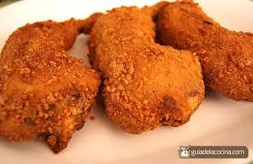

Inicio
Pollo empanizado

Descripción
¿A quién conoces que no le guste el pollo empanizado? ¡Alegra tu paladar con un clásico!
Ingredientes
- 3 pechugas de pollo
- harina de trigo pollo empanizada maxicarne
- 1 taza de harina (dividida)
- pan molido pollo empanizada maxicarne
- 1/3 taza de pan molido
- huevo pollo empanizada maxicarne
- 1 huevo grande (batido)
- 1 taza de aceite de cocina
- 1/2 cucharadita de ajo en polvo
- 1/8 cucharadita de pimienta de cayena
- 1/8 cucharadita de cebolla en polvo
- 3 cucharadas de leche
- 1 pizca de sal y pimienta al gusto
Pasos
- Coloca las pechugas en una bolsa de plástico cada una, aplana con un rodillo o para carne hasta que tenga un grosor uniforme.
- Mezcla 1/2 taza de harina, sal, ajo y cebolla en polvo.
- En un tazón aparte mezcla el huevo y la leche.
- En otro tazón, coloca 1/2 taza de harina para batir con sal y pimienta.
- Con un tenedor, sujeta cada pieza de pollo primero en la harina, luego en el huevo batido y, finalmente, cubre con el pan molido. Asegúrate que las piezas queden bien cubiertas.
- Fríe a fuego medio a medio alto en aceite precalentado hasta que se doren por ambos lados, aproximadamente de 6 a 7 minutos dependiendo la estufa.
- Retira del aceite y deja reposar sobre una rejilla antes de servir con la guarnición de tu elección.
- ¡A disfrutar este platillo preferido por todos! ¡Buen provecho!